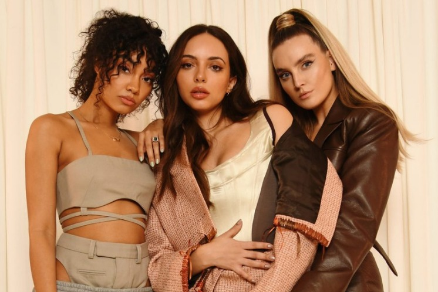

LITTLE MIX : JORNADA COMO TRIO
Girl Group britânico de Pop e R&B foi formado em 2011 no reality show de competição musical, The X Factor. Tudo começou quando uma das juradas do programa, Kelly Rowland (ex integrante do Destiny’s Child), juntou Perrie Edwards, Jade Thirwall, Leigh- Anne Pinnock e Jesy Nelson. Elas fizeram história no programa sendo o primeiro grupo a ganharem a competição até hoje. A música e imagem da banda foi construída com hinos feministas e sobre imagem corporal além do ativismo das integrantes na luta LGBTQIA+ e na luta da comunidade negra. A girlband possui 6 álbuns de studio e diversos hits ao longe de sua trajetória. Em dezembro de 2020, Jesy Nelson anunciou sua saída da Little Mix que desde então continuou sua jornada como um trio. Agora em novembro de 2021 lançam mais um álbum de studio, o primeiro como trio, que promete cinco faixas inéditas e reinvenções das músicas mais famosas compostas pelas cantoras para a comemoração de 10 anos da banda. A música Between Us, lançada dia 4 de novembro é faixa principal e título do álbum que está marcado para lançamento dia 12 de dezembro.